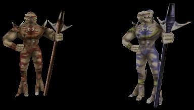

Krall

A standard Krall on the left, and a Krall Elite on the right. When standing in place, a Krall appears almost as tall as a Skaarj Warrior. However, a Krall seems noticably shorter when walking or running. |
The Krall are a slave race of the Skaarj, and have been integrated into their society as a lower class of soldier. Though a Krall will always follow the orders of a Skaarj, they have their own ways of rebelling, such as by sleeping or playing dice when they are supposed to be on duty.
All Krall come armed with a staff weapon with three vertical blades on one end. The weapon is long enough to be considered a staff, but top-heavy enough to act as a mace when necessary. This weapon is also capable of launching energy bolts from the bladed end, so it will also server as a ranged weapon. In general, most Krall are slow but agile. This is predominantly due to their frail legs, which can be lost in battle quite easily.
Krall Elite are high-ranking Krall that can be identified by their white skin and blue accents. They are more agile and demonstrate a much greater skill in battle. They also carry a staff weapon that shoots faster and more powerful energy bolts.
Properties
- StrikeDamage, PoundDamage, ThrowDamage
- These variables determine the amount of damage that the Krall's melee attacks do. StrikeDamage refers to when the Krall does a horizontal swat with the bladed end of its staff. PoundDamage refers to when the Krall does a vertical hammering motion with the staff in both hands. ThrowDamage refers to when the Krall picks its target up with the blades of its staff and throws it backward. (ThrowDamage only applies if bSpearToss is True.)
- bSpearToss
- This determines if the Krall is capable of throwing a target in melee range with its staff. If applicable, damage from the throw is determined by the ThrowDamage variable.
- bDicePlayer
- This variable can be used to make a Krall play dice with other Krall in its team. Obviously, a group of Krall in the middle of a dice game will be very distracted, and they are unlikely to even notice an approaching player. To make use of this feature, have all Krall in the team arranged in a circle, and set this variable to True for each one of them. Make sure that one of the team is identified as the Team Leader, so that he will produce a pair of dice for the team to play with.
- bSleeping
- This variable can be used to make a Krall be asleep when a player encounters it. Obviously, a sleeping Krall will be very unalert, and may not even wake up when a player approaches. To make use of this feature, set this variable to True in the Krall's properties, and the Krall will go to sleep. Then the AnimSequence variable in the Krall's Display properties can be set to Sleep1, Sleep2, or Sleep3, to make the Krall sleep in a predefined bodily position.
- MinDuckTime
- This variable determines at least how long a Krall will stay behind cover when it ducks to avoid getting hit by incoming projectiles.
Known Subclasses
Krall +- EliteKrall +- LesserKrall (UT only)
Related Topics
- Monster Support
- Invasion (UT2004 gametype)
Discussion
UsAaR33: Are you sure that sleep2 and sleep3 can be used with standard krall? Reading the code, I see that bsleeping causes sleep1 to animate...